可持续的《可持续生活指南》
结营成果展
上周（12.06）可持续生活创变营举办成果展，终于结营了！
主题是“超越 1.0，创变无限可能”，虽说这个 1.0 不是那么完美，但也该启程迈向 2.0 了。一直想写点什么，但又不太敢落笔，因为害怕，害怕失败，也害怕成功。昨晚瓶子找我访谈，聊了整个创变营的经历和感受，从10月18日一直到12月6日，确实发生了很多事，也带来了一些新东西。其实，还是很值得记录的！
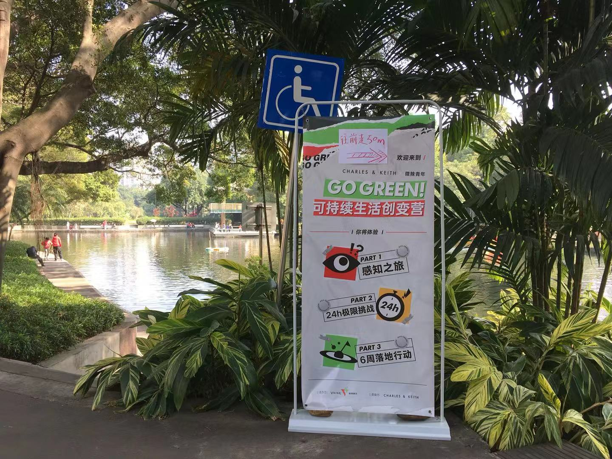
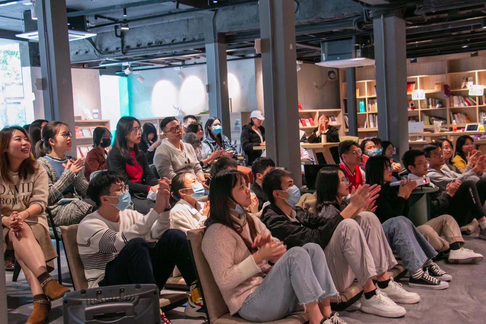
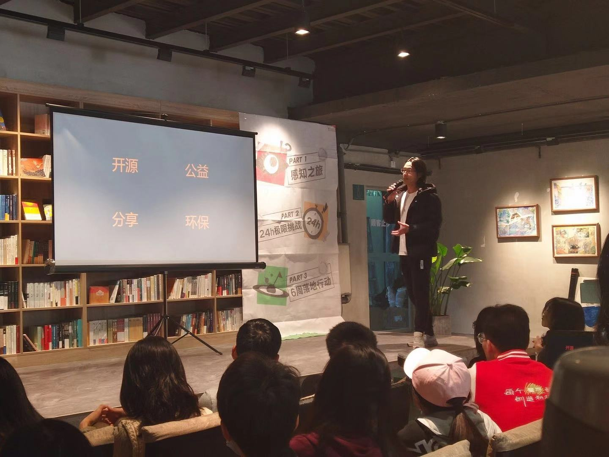
我们的 PPT
结营发布会的 PPT 采用 20x20 的形式进行，即 20 页 PPT，每页 PPT 20 秒。由于时间仓促，准备不充分，所以有些东西没有讲到…… 那再讲一遍吧～
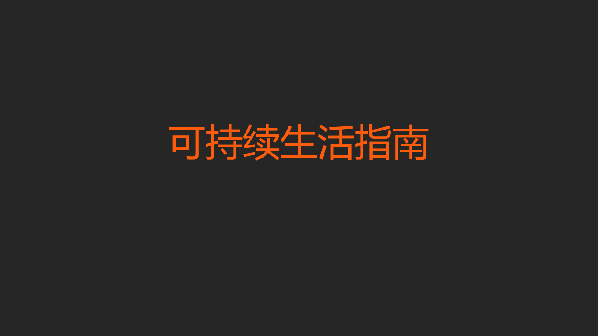
我们的项目「可持续生活指南」，目标是通过学习、实践、资料收集… 整理一份关于可持续生活的在线文档。这份指南并不好写，因为可持续的话题太大了，涉及到生活的方方面面和各个不同的场景，同时又涉及生态、能源、经济、城市规划等不同学科领域的知识。这对于我们来说是一个很大的挑战，不过，我们愿意接受挑战！
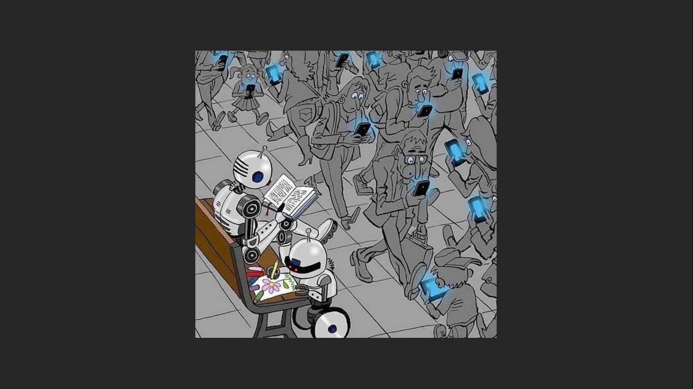
这是现在我们很多都市打工人的生活状态（包括我自己），我常常反思：为什么我们要不停地工作、加班、制造产品，然后想办法销售出去，不断消费，不断工作赚钱以维持这种消费…？虽然我是软件工程师，但其实我并不想让我和我的生活被智能设备所包围。有时候觉得，科技的发展似乎没有解放人类，反而限制了我们。
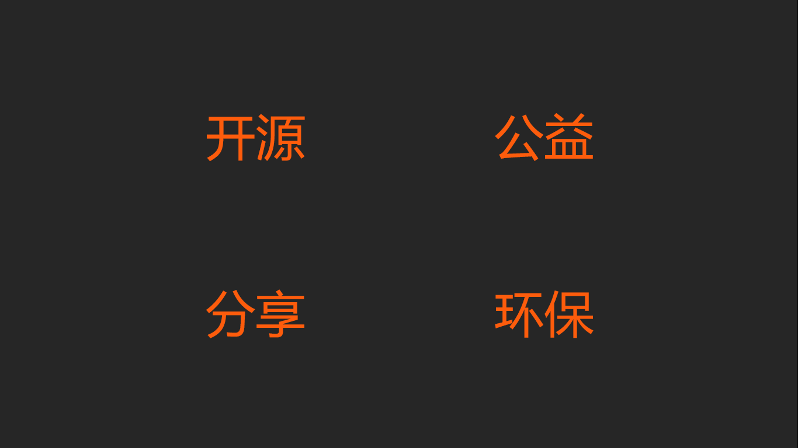
所以我们提出了「可持续生活指南」这个项目，希望通过一种开源、公益的形式一起收集、创作、分享关于环保、零废弃、可持续发展方面的内容。帮助更多和我一样想摆脱困境的人，释放每一个人的创造力，过上更可持续的美好生活。
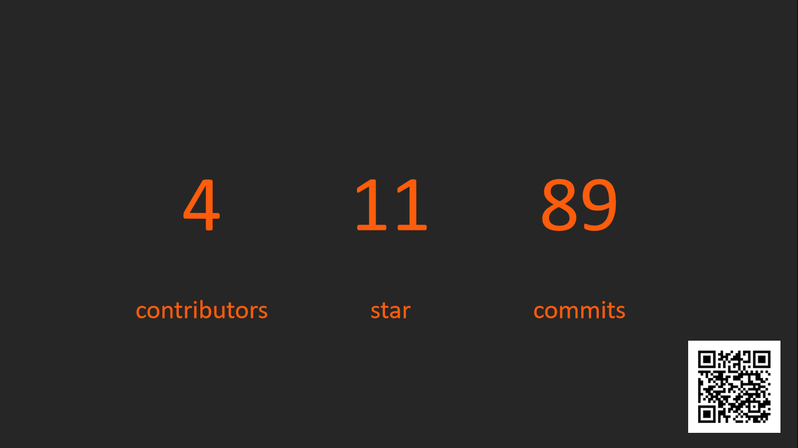
我们的项目托管在 Gitee 平台，协作过程其实跟开源软件一样，许可协议采用的是 CC-BY-SA-4.0，即“署名-相同方式共享”协议。特意增加许可协议其实是为了保护所有贡献者的权益，同时又不限制文档的传播。这是过去六周的一些数据：一共有 4 名贡献者，11 个 Star，89 次提交。
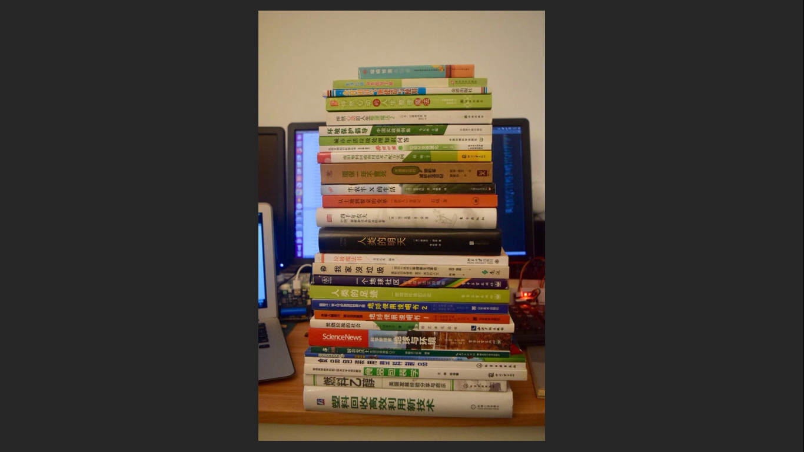
描述可持续生活的书籍并不多，这是我过去几年看过的一些材料，涉及垃圾分类、塑料回收、Zero Waste、堆肥、有机农业、地球环境、断舍离等话题。这也是我们这个项目的起点，我们希望给大家呈现的是一份可信的、科学的、有趣的在线文档。
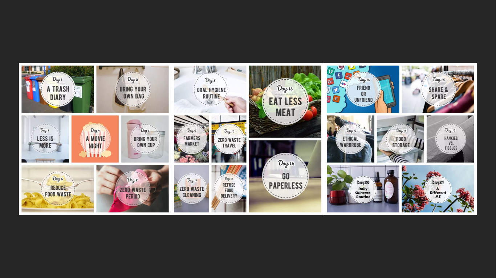
我在 2017 年机缘巧合地进入了 GoZeroWaste 社群，这些年也在参考《21天零垃圾生活养成手册》进行实践。可以说这份手册给了我很大的启发，我们原来也想把它收录进来，不过它的作者老汤觉得不太合适，所以暂时没办法收录。大家可以在 GoZeroWaste 微信公众号找到，强烈推荐！
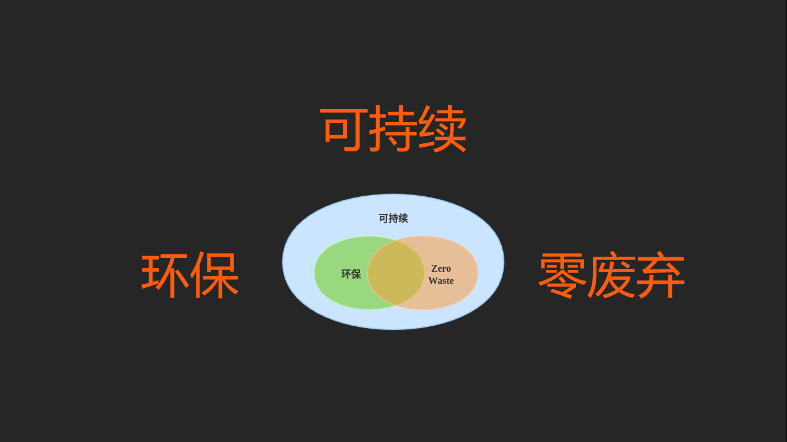
回过头来，我们开始思考我们的研究对象，探讨“可持续”、“环保”、“零废弃”之间的关系。“环保”这个词显得过于严肃，以至于我们都不敢声称自己是环保主义者。相对来说，“零废弃”更侧重于个人生活方式的描述，让我们这些环保主义者感到更轻松。但其实它们又有很多共同点，可以说是一体两面的关系，环保更关注外在，而零废弃更关注内在，它们的目标都是追求可持续发展。
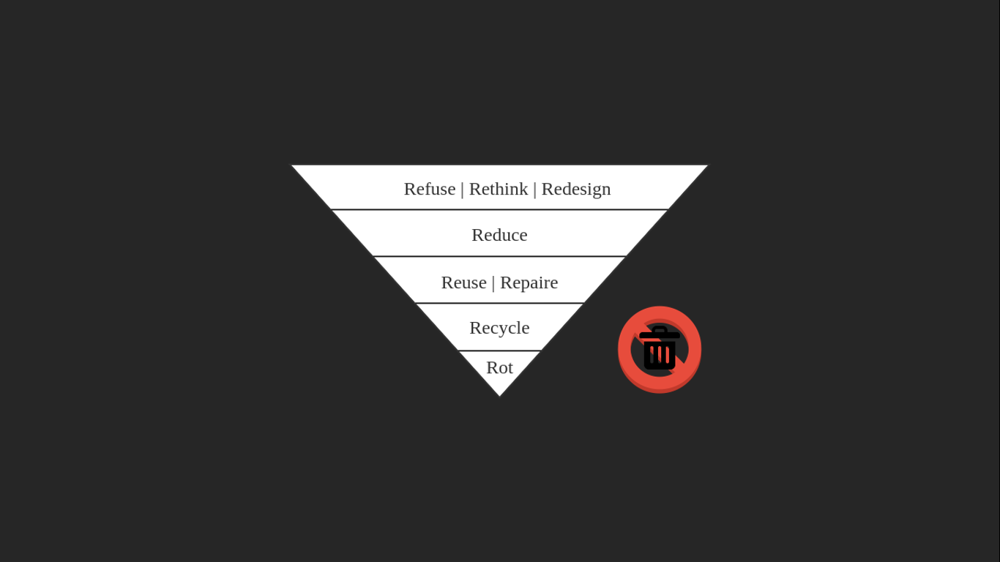
说起环保，相信很多人都知道 3R 原则 —— Reduce、Reuse、Recycle。但是我们发现，其实我们能做的不止 3R，我们可以做得更好。环保不是环保工作者的事，环保和我们每个人息息相关，因为没有一个人、没有一件事是孤立的！作为工程师、设计师、决策者、消费者的我们，其实可以在源头做得更好，可以制造出更低碳、更可持续的产品。这比后面考虑如何回收、如何处理要重要多得多。
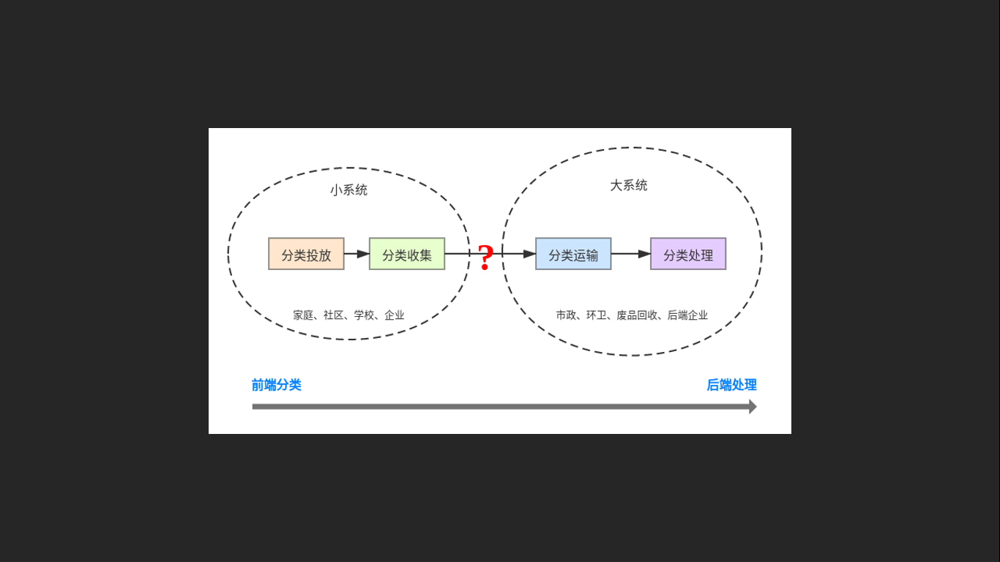
垃圾分类可能是离我们最近的环保行为了，但很多人都把它当作一个垃圾分类投递的动作而已。其实不然，垃圾分类是一项系统工程，包括分类投放、分类收集、分类运输、分类处理四个环节，哪个环节出问题了，都会影响到垃圾分类的整体效果。这也是为什么垃圾分类这么难的原因所在。
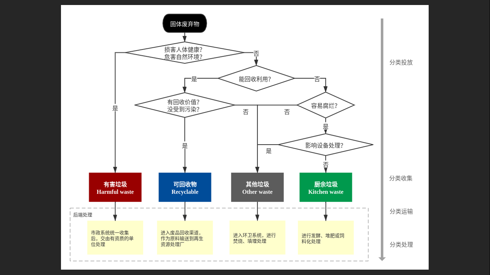
对于大多数人来说，通常只关心前端分类的，即“这是什么垃圾？” 因此我们画了一张流程图，帮助大家快速辨别垃圾的种类，培养垃圾分类的全局思维。分类的依据不仅仅是垃圾本身的成分和属性，往往还跟后端处理方式以及回收价值有关。理解这一点，垃圾分类就不难了！
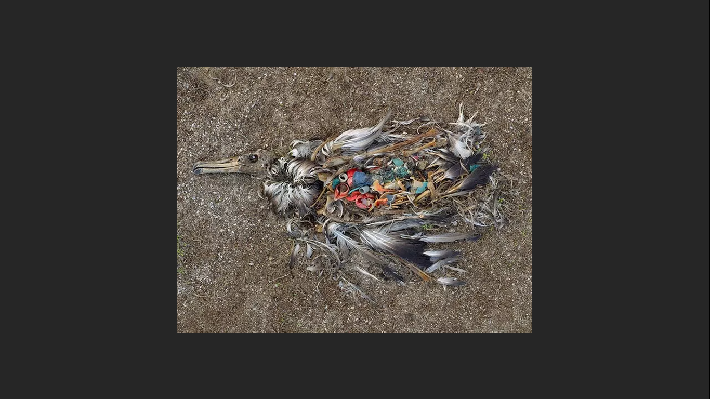
虽然你已经学会了垃圾分类，但是比做好垃圾分类更重要的是 —— 减少垃圾的产生。当我们第一次看到这张图，非常震惊！我们习以为常地认为垃圾丢到垃圾桶后，它就消失了，其实并没有，哪怕是焚烧处理，它们也只是换了一种方式与我们共存。更何况，你能想象你今天扔的一个瓶盖、一根吸管，明天将成为伤害其他生物的凶器，再通过生物链回到我们人类的身边吗？
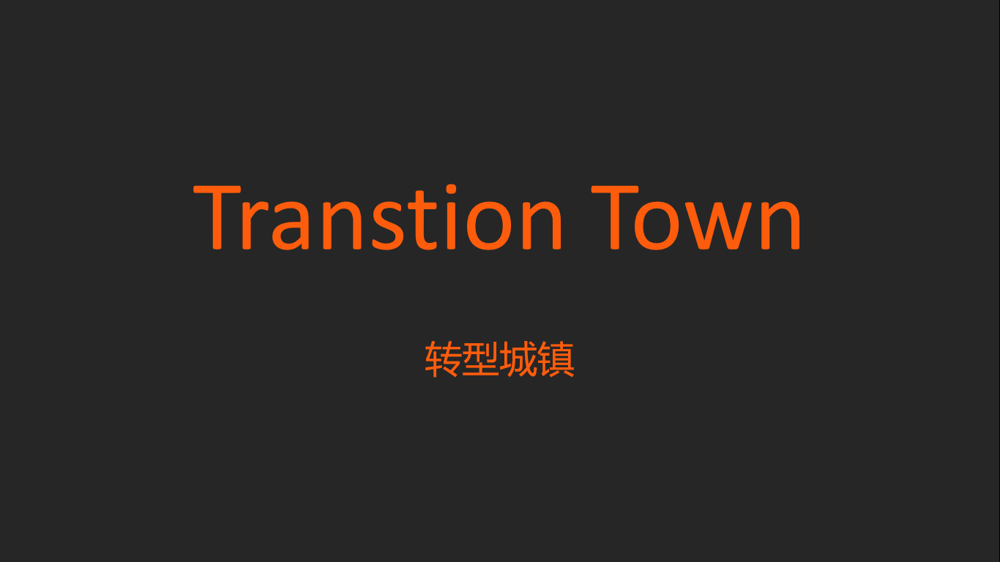
环保真的是一个很敏感、很严肃的话题。不过我们在这趟旅程中也发现了很多有趣的东西，比如被称为西方消费主义的解药的“城镇转型”。最早就起源于英国，通过一系列的社区活动，在食物、能源和经济等方面作出改变，试图构建本地社区的可持续生活模式。如今，全世界已经有数千个转型城镇，我们中国也涌现出一些有转型城镇影子的生态村，我觉得生活在这些地方应该挺幸福的。
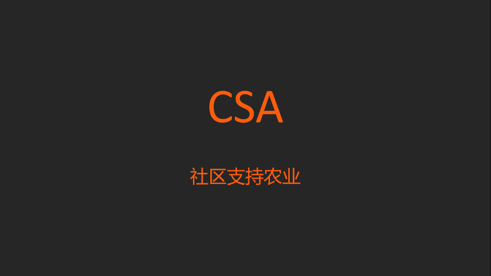
我们还了解到 CSA 这种有趣的社区农业模式，通过“社区支持农业”，可以让城市的居民吃上健康、有机的食物，可以让农民更好地、更体面地工作和生活，还可以保护自然生态环境，简直就是一石三鸟的妙招。我们也希望通过这个在线文档的项目，让更多人了解、理解并参与到 CSA 社区支持农业当中来。
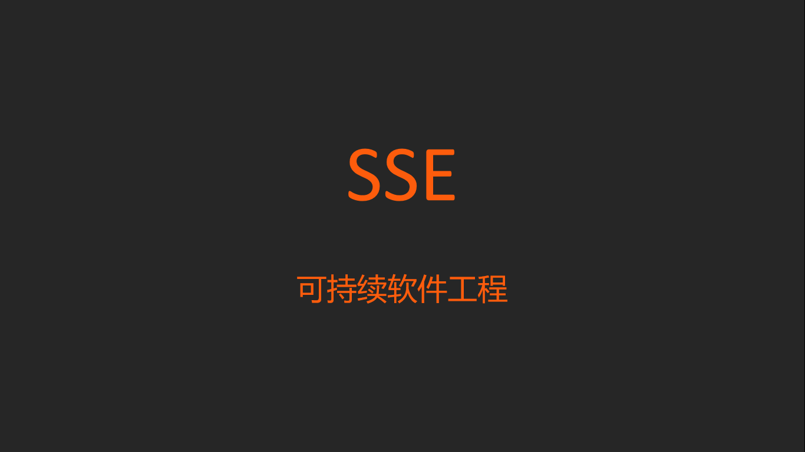
让我感到惊喜的是，我们还发现了“可持续软件工程”这个新领域。它更像是一套分析方法，从碳排放、能量均衡、网络效率等多个角度给出建议，提醒软件厂商在设计阶段考虑环保因素，帮助工程师们作出更优的选择，以降低软件对环境的影响，成为更可持续的软件。
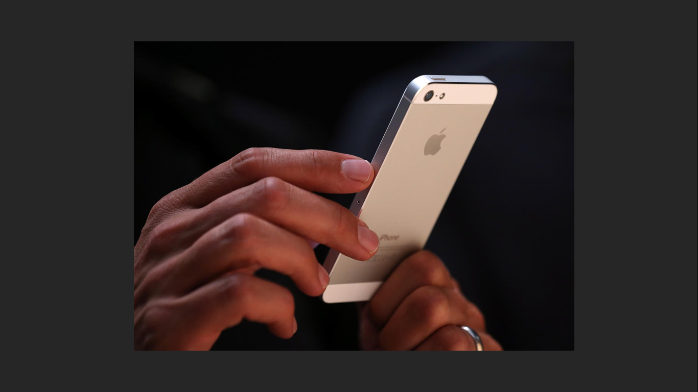
我这台 iPhone 5SE 已经用了五年，很多人都问我怎么还不换手机？大家可能不知道，智能手机毁灭地球的速度比任何人想象的都要快。现在智能手机的平均生命周期只有两年，问题在于，虽然手机的体积很小，但功耗却不小，而且制造手机所需的稀土金属，其开采和处理过程对水资源、耕地资源都有很大影响。所以当有伙伴跟我说：“作为 IT 工作者，还在用 iPhone 5SE，你让我看到了希望！” 我真的特别感动！
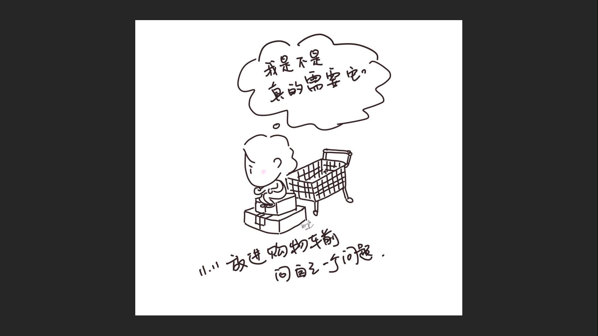
其实不只是手机，在践行环保的过程中，我的消费观念也发生了变化。我做消费决策时，总会提醒自己：只买需要的，不买想要的！它不仅帮我省钱，还帮我摆脱了物欲，让我感到更轻松自在，这不就是可持续生活吗？虽然富人的环保意识比穷人更高，但实际情况是富人所造成的碳排放远高于穷人！我希望大家能更多地追求精神上的富足，而不是物质上的富有。
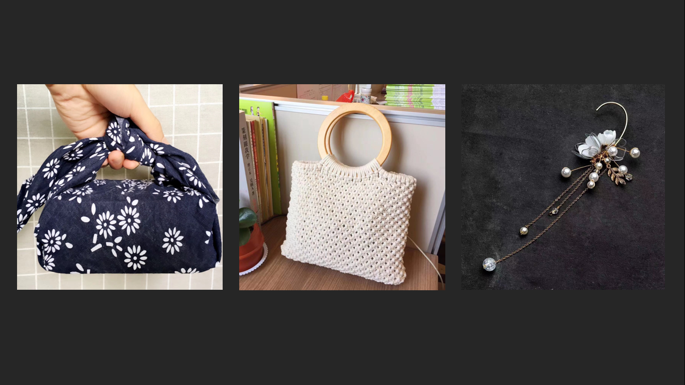
可持续生活真的是一种很美的生活方式，左边是我用一块布包裹的餐盒，用来替代塑料袋，比塑料袋好看多了！右边两张是我认识的一些手工艺人的作品，还有很多自己 DIY 的东西，就像魔法师一样，想方设法延长物品的生命周期。
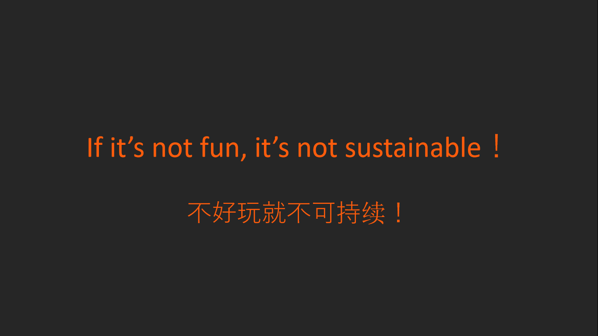
前面说的这些，主要是想打破大家对“环保”的刻板印象。其实环保也可以很好玩，零垃圾的生活也可以很有趣。这也是我们「可持续生活指南」想展现给大家的。
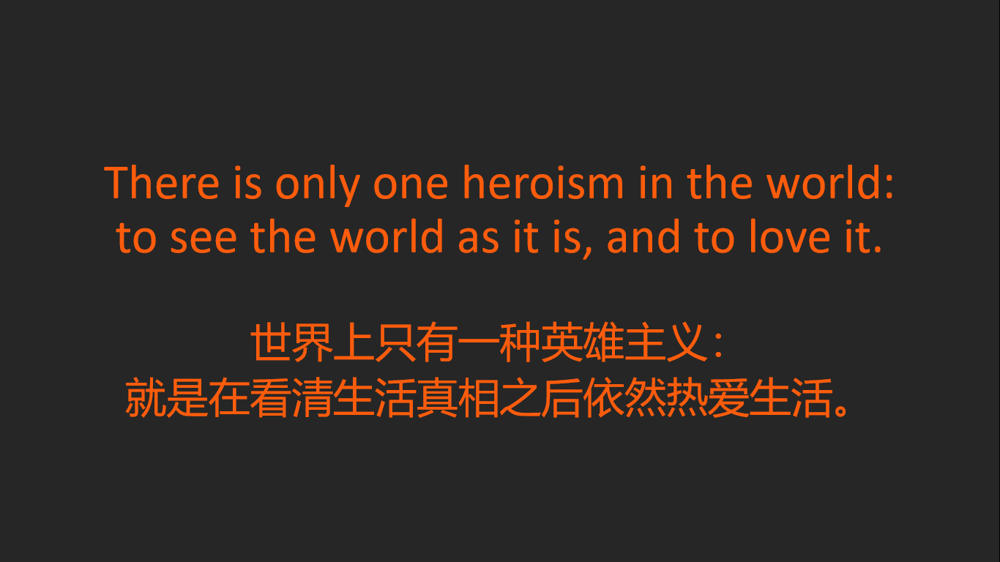
如果用一句话总结我们这一路走来的心路历程，我想这句话再合适不过。我花了很长时间才肯放下过去许多觉得理所当然的观点，这确实需要勇气，承认自己的错误和无知。生活其实还有许多我们不曾看到的一面，我很高兴现在依然热爱生活，希望你们也是！
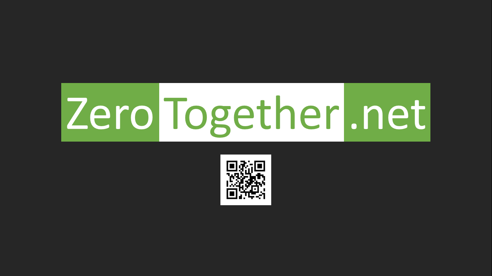
最后，就是我们的「可持续生活指南」项目，我们特意取了 zerotogether.net 这个域名。Zero 代表所有走在零废弃路上的伙伴，Together 代表我们希望这个项目能帮助大家聚集起来，一起保护我们的地球家园。我们把中文翻译为“零聚”，谐音“凝聚”，希望能够形成凝聚力，让每个寻找可持续生活的人都不再感到孤单。
扫描二维码就可以看到我们的项目啦～
ZeroTogether
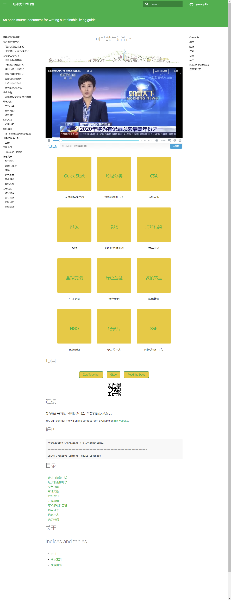
如你所看到，「可持续生活指南」在线文档目前还比较简陋（如果你来晚了，说不定又改版了）。如果你和我们一样，觉得它有价值；如果你和我们一样，希望为环保贡献一份力量；如果你和我们一样，希望勇敢地走上可持续发展道路。我们真的很需要你，来和我们一起完善它！
超越 1.0
好啦，时间过得很快。回想起来，感恩之旅、24小时极限挑战、6周落地行动…… 仿佛是好久以前发生的事。也许是因为遇到相似的人、相似的观点，所以多了一见如故的感觉吧。Anyways，我们的行动不止于此，超越 1.0，继续向可持续生活迈进！
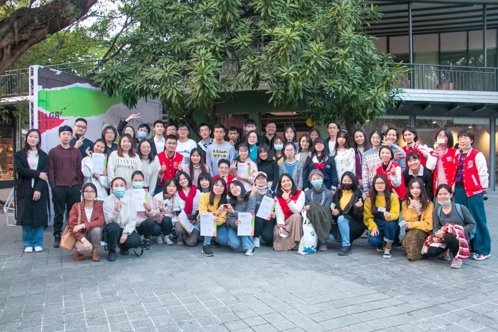
本博客所有文章除特别声明外，均采用 CC BY-SA 4.0 协议 ，转载请注明出处！